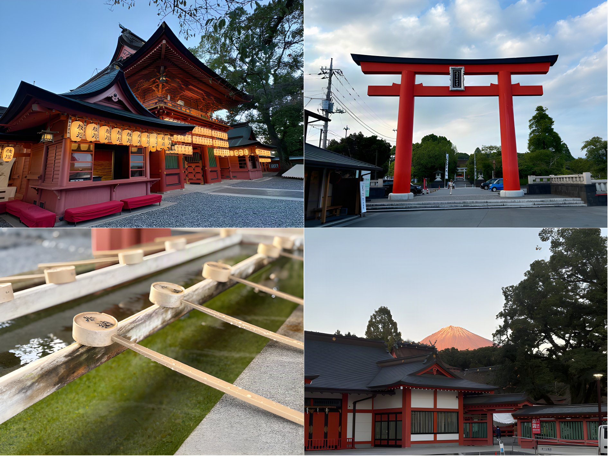
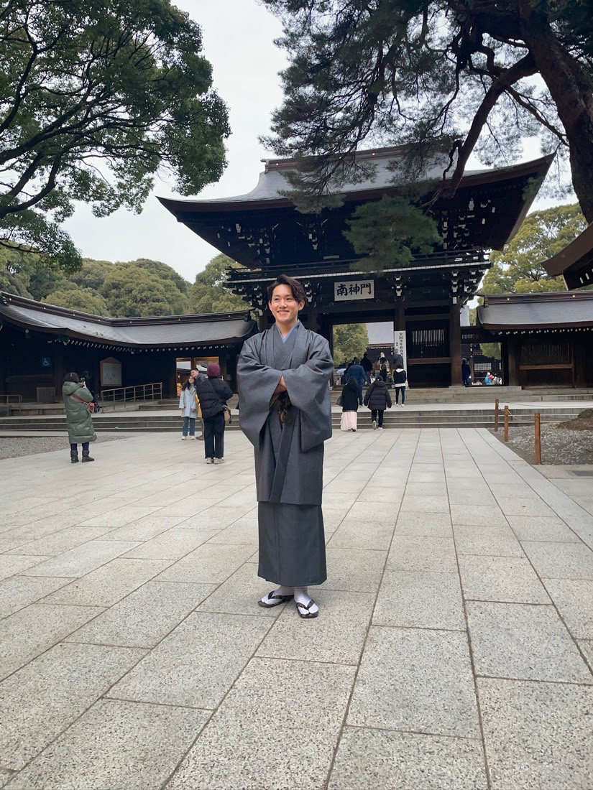
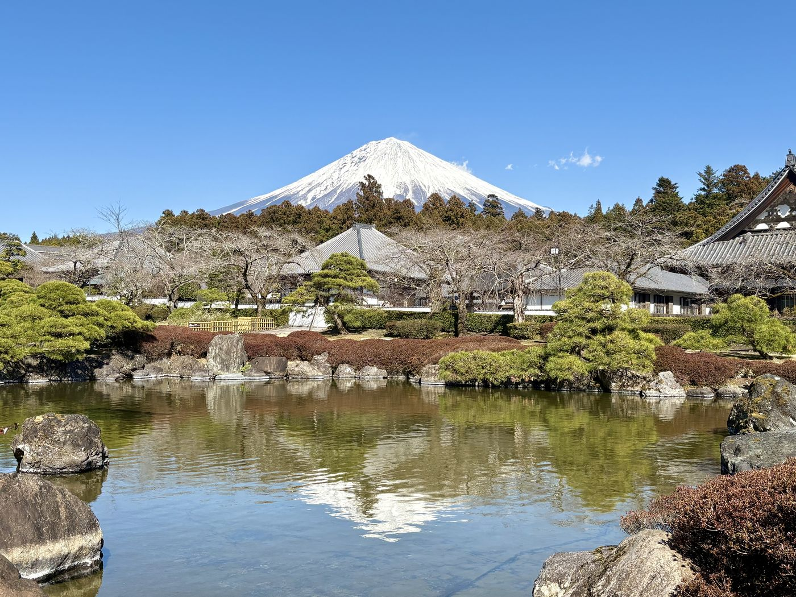

What "soul" means here

For the people who grew up at its foot, Mt. Fuji isn't a backdrop. It's a presence, a weather system, a deity in some senses, a story your grandmother told you. That gap — between the mountain on a postcard and the mountain as it's actually lived with — is what Fuji Soul Tours was built to close.
So on tour, every stop comes with its why. Why this shrine is where Fuji worship began. Why the tea house has stood for centuries. Why locals queue at a particular yakisoba griddle. You can photograph Japan in a day; understanding even a small piece of it is what you'll still be talking about years later.
Why do most Japanese visit shrines — without considering themselves religious?

Many Japanese people don't identify as religious in a Western sense — yet nearly everyone visits shrines on New Year's, attends Buddhist funerals, and prays at temples for good luck. How?
Shinto and Buddhism in Japan are not competing belief systems — they've coexisted and blended for over 1,400 years. Shinto, rooted in the idea that gods (kami) dwell in nature — mountains, rivers, trees — is less a set of doctrines than a way of relating to the world. Buddhism, which arrived from China in the 6th century, added a framework for life's rituals: birth, death, the afterlife.
The result is a culture where spiritual practice is habitual and communal, not confessional. You don't need to "believe" to participate — just as people around the world celebrate Christmas without being devout. For most Japanese, visiting Mt. Fuji's shrine isn't an act of faith; it's an act of being Japanese.

Why are Japan's streets so clean — with almost no public trash cans?
Japan removed most public trash cans in the 1990s following security concerns — yet streets stayed immaculate. Visitors are often baffled. The answer isn't enforcement. It's three overlapping worldviews that have shaped behavior for centuries:
- Shinto: 清浄 (purity) — spaces, especially sacred ones, must be kept clean and pure. A cluttered, dirty space is one where kami cannot dwell. The habit extends from the shrine to the street.
- Zen Buddhism: cleaning as practice (修行) — in Zen temples, sweeping and scrubbing are not chores but meditation. Japanese schools still begin the day with students cleaning their own classrooms.
- Confucian 和 (harmony) — one should not impose burden on others. Leaving litter isn't just untidy; it's a disruption of collective harmony. So people carry their trash home.
No single force explains it. It's the intersection of all three — and once you see it, you see it everywhere in Japan.
Why everything here tastes of the mountain

One more thread ties the whole region together: water. Snow that falls on Mt. Fuji filters down through volcanic rock and emerges at its southern foot as some of Japan's purest spring water. It's why a 190-year-old brewery makes sake here, why the local tea is good enough to win national awards, and why Fujinomiya's noodle makers credit the water for their yakisoba. Drink anything on the southern side and, in a real sense, you're tasting the mountain.